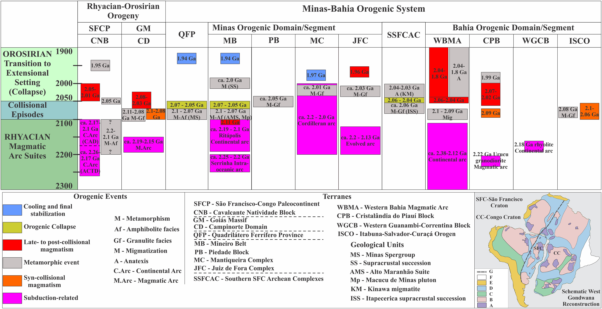

Paleoproterozoic (2.26–2.0 Ga) arc magmatism and geotectonic evolution of the Cavalcante-Natividade Block, Central Brazil

Resumo em Português
Com base em dados isotópicos U-Pb e Nd e em geoquímica de rocha total, este estudo investiga a evolução geotectônica dos metagranitoides relacionados a arco (~2,26–2,0 Ga) expostos no Bloco Cavalcante-Natividade (BCN), Tocantins, embasamento da porção norte do Orógeno Brasília. Os produtos do arco foram agrupados em: (1) Suítes do tipo-I mais antigas (2,26–2,17 Ga) [εNd(t) = +1,2 a −3,1], com idades de cristalização U-Pb em zircão de 2210 ± 9 e 2204 ± 15 Ma; e (2) Suíte Aurumina mais jovem (2,17–2,0 Ga), composta por tipos-I e S-peraluminosos [εNd(t) = +3,52 a −2,51], com idade U-Pb em zircão de 2141 ± 15 Ma para a litofácies Au3. Tonalitos e granodioritos cálcicos dessa suíte formam o arco continental costeiro, enquanto os granitoides potássicos refletem magmatismo crustal mais interiorano. Os dados isotópicos de Nd evidenciam o retrabalhamento dominante e contínuo de crosta pré-existente, com adições juvenis subordinadas à medida que o arco evolui. O modelo geotectônico evolutivo consiste em uma subducção prolongada em direção à margem ocidental da paleoplaca São Francisco-Congo (PSFC) e no desenvolvimento de um sistema de arco continental de longa duração. Grãos de zircão detrítico extraídos de um metagrauváque da Formação Morro do Carneiro forneceram idade máxima de deposição de 2196 ± 6 Ma, delimitando melhor a idade Riaciana para a sucessão superior do Grupo Riachão do Ouro. Um leucossoma em paragnaisse migmatítico da Formação Ticunzal registra o evento metamórfico final no BCN, com idade U-Pb em monazita de 1954 ± 28 Ma. Os estágios finais da orogenia Riaciana-Orosiriana registrada no BCN (2,1–1,9 Ga) podem ser atribuídos a magmatismo tardio a pós-orogênico localizado e a um evento térmico anterior à cratonização da PSFC. O BCN registra estágios evolutivos cronocorrelacionados ao Orógeno Minas-Bahia.